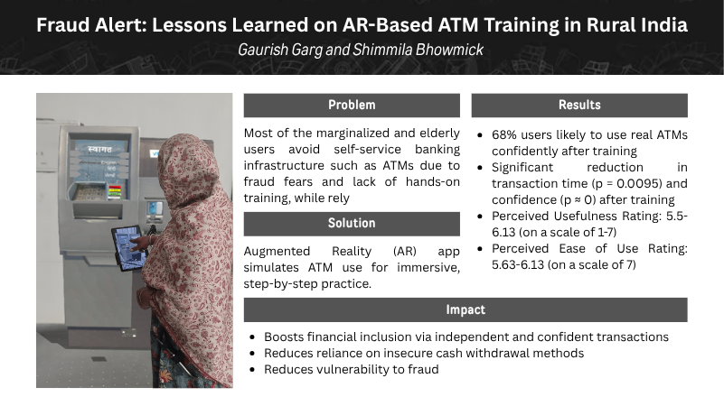

Fraud Alert: Lessons Learned on AR-Based ATM Training in Rural India
Gaurish Garg, Shimmila Bhowmick (2025)

Summary
Created an AR ATM training app for 22+ rural seniors (ages 55–80), increasing post-training ATM confidence to 80% (median), with 68% likely to use ATMs, a transaction accuracy of 82%, and p-value < 0.01 validating significant reduction in transaction time and security fears.
Details
AR for Financial Inclusion: App provides life-size, hands-on ATM training via AR, targeting elderly and marginalized rural users.
- Quantified Impact: 68% post-training are likely to use real ATMs; median confidence at 80%; transaction accuracy at 82%.
- Statistical Validation: Repeated Measures ANOVA (p < 0.01) confirms significant confidence and efficiency gains after AR training.
- User-Centric Insights: Standard deviation of 34.8% shows wide engagement; senior participants cut average ATM time from 71s to 15s after multiple trials.
- Societal Value: Implementation helps 25% of rural cash users—reducing reliance on unsafe withdrawal channels and fostering self-reliance in digital finance.